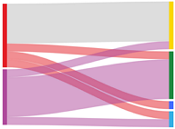

生物信息与R语言QQ群: 187923577
Tips: 刷新代码颜色随机。
1. 本页面最底部有生信QQ群号，欢迎加入讨论，严禁广告。
桑基图适合展示状态的变化，展示变动的方向和比例。桑基图还有个的特征是，流出端和流入端的数据一般都是相等的，即分支宽度总和相等，就像能量守恒定律一样。不仅仅是流向的数据，只要是具有层级的分类数据，都可以用桑基图来展现

// 代码详见上一行demo
//(1)R产生json的代码
xx=data.frame(
'from'=c('cd4', 'cd8', 'cd4', 'cd8'),
'to'=c('Treg', 'Treg', 'Tem', 'Tem'),
'flow'=c(11, 20, 30, 40)
)
xx
jsonlite::toJSON(xx)
// [{"from":"cd4","to":"Treg","flow":11},{"from":"cd8","to":"Treg","flow":20},{"from":"cd4","to":"Tem","flow":30},{"from":"cd8","to":"Tem","flow":40}]
(2) js 转obj为array
var dt=[{"from":"cd4","to":"Treg","flow":11},{"from":"cd8","to":"Treg","flow":20},{"from":"cd4","to":"Tem","flow":30},{"from":"cd8","to":"Tem","flow":40}]
arr=[]
for(i in dt){
var o=dt[i]
arr.push([o.from, o.to, o.flow])
}
arr
/*
0: (3) ["cd4", "Treg", 11]
1: (3) ["cd8", "Treg", 20]
2: (3) ["cd4", "Tem", 30]
3: (3) ["cd8", "Tem", 40]
*/
欢迎互相切磋，共同进步: 秋秋号 314649593, 请备注大名、来意。
秋秋群: 生物信息与R语言 187923577 禁止营销活动，否则飞机票。
bioToolKit is part of 生物慕课网 www.biomooc.com